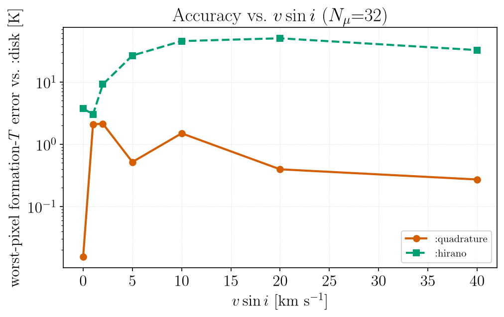
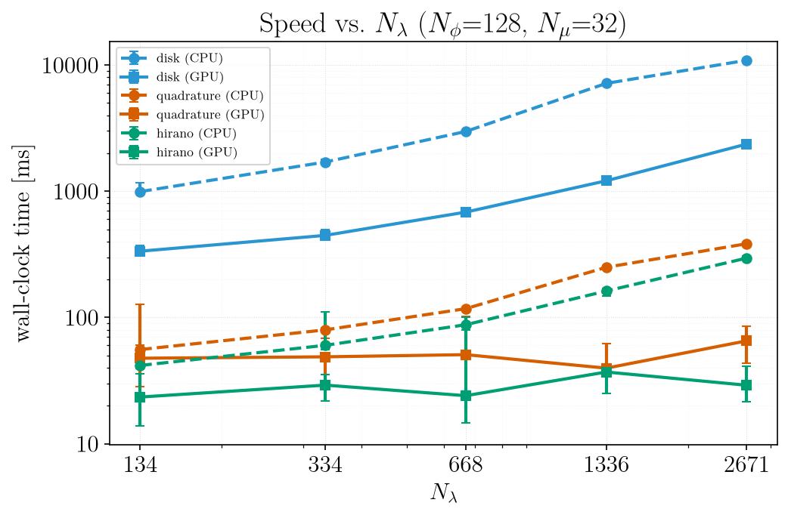
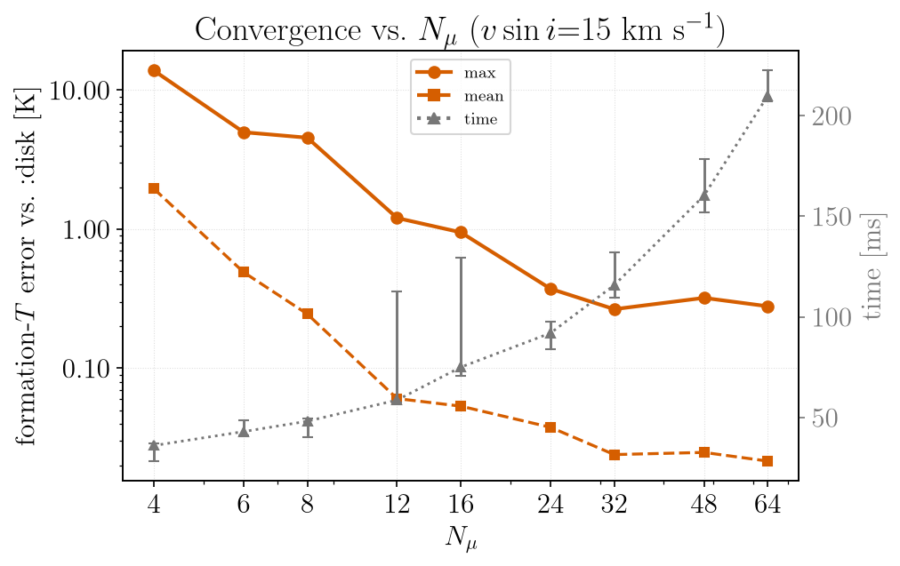
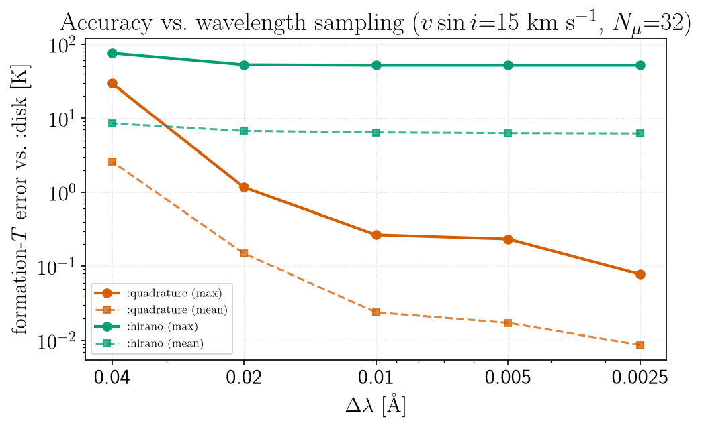

Integration Methods
calc_formation_temp can integrate over the stellar disk in three ways, selected with the method keyword:
method | description | worst-pixel error vs :disk | cost |
|---|---|---|---|
:disk (default) | explicit integration over Nϕ latitude bins | reference | seconds per call |
:quadrature | Gauss–Legendre μ-quadrature, rotation applied per ring | ≲ 2 K | 18–28× less than :disk on CPU, 7–36× on GPU |
:hirano | analytic rotation + macroturbulence kernel (needs u1, u2) | tens of K once vsini ≳ 5 km/s | 1.3–1.5× less than :quadrature on CPU, 1–2× on GPU |
calc_formation_temp(star, linelist; method=:disk) # reference
calc_formation_temp(star, linelist; method=:quadrature) # fast, near-reference
calc_formation_temp(star, linelist; method=:hirano, u1=0.43, u2=0.31) # fastest, approximateAll three run on the GPU with use_gpu=true.
convolve=false maps to method=:disk and convolve=true to method=:hirano. New code should use method.
Which method to use
:diskis the reference. It is the most accurate and the most expensive. Use it for the definitive answer, or to check the other two.:quadratureis the right choice almost everywhere else. It reproduces:disk, inclination and differential rotation included, to within about 2 K at the worst pixel and well under 0.1 K on average, for a twentieth to a thirtieth of the CPU time.gpu_precision=Float32costs it no accuracy.:hiranotrades a lot of accuracy for a little speed. It is only 1.3–1.5× faster than:quadratureon CPU, and on a GPU both finish in tens of milliseconds. Its error, tens of Kelvin oncevsini ≳ 5km/s, comes from its parametric limb darkening and does not shrink with resolution. Use it only when cost matters more than that.

Worst-pixel formation-temperature error against :disk. :quadrature is least accurate around vsini ≈ 1–2 km/s, where its rotation kernel spans only a few wavelength pixels.

Wall-clock time per call (Nϕ = 128, Nμ = 32) on the machine described under Parallelization; error bars span repeated timings.
Tuning :quadrature
The defaults are converged, so there is rarely a reason to change them.
Nμ: more nodes than the default of 32 cost time without improving agreement.
Δλis the setting to refine for agreement better than about 0.3 K: the remaining error comes from placing the rotation kernel on the wavelength grid.:hiranodoes not improve with finer sampling.
N_azonly matters under differential rotation, and then by millikelvin. Leave it alone.
The figures are regenerated by benchmarks/benchmark_quadrature.jl followed by benchmarks/plot_quadrature.jl.
Rotation
Rotation is set by vsini (the projected equatorial velocity), istar, and the differential-rotation coefficients α₂, α₄ on StellarProps. For rigid rotation istar has no effect. :hirano supports rigid rotation only.
Caveats
Saturated line cores. Where the contribution function still peaks at the top of the model atmosphere, the formation temperature is set by where the model was truncated and is a lower limit.
boundary_maskflags those wavelengths; drop them before interpreting a formation-temperature spectrum:result = calc_formation_temp(star, linelist) good = .!boundary_mask(result) # or boundary_mask(result; r_thresh=…)A line can also be wrong for reasons the contribution function does not show, such as LTE or bad atomic data; see Lines the model cannot get right.
Narrow windows. If the rotation kernel is wider than the wavelength window,
:quadraturewarns that the broadening is truncated. Widen the window withminλ/maxλ.